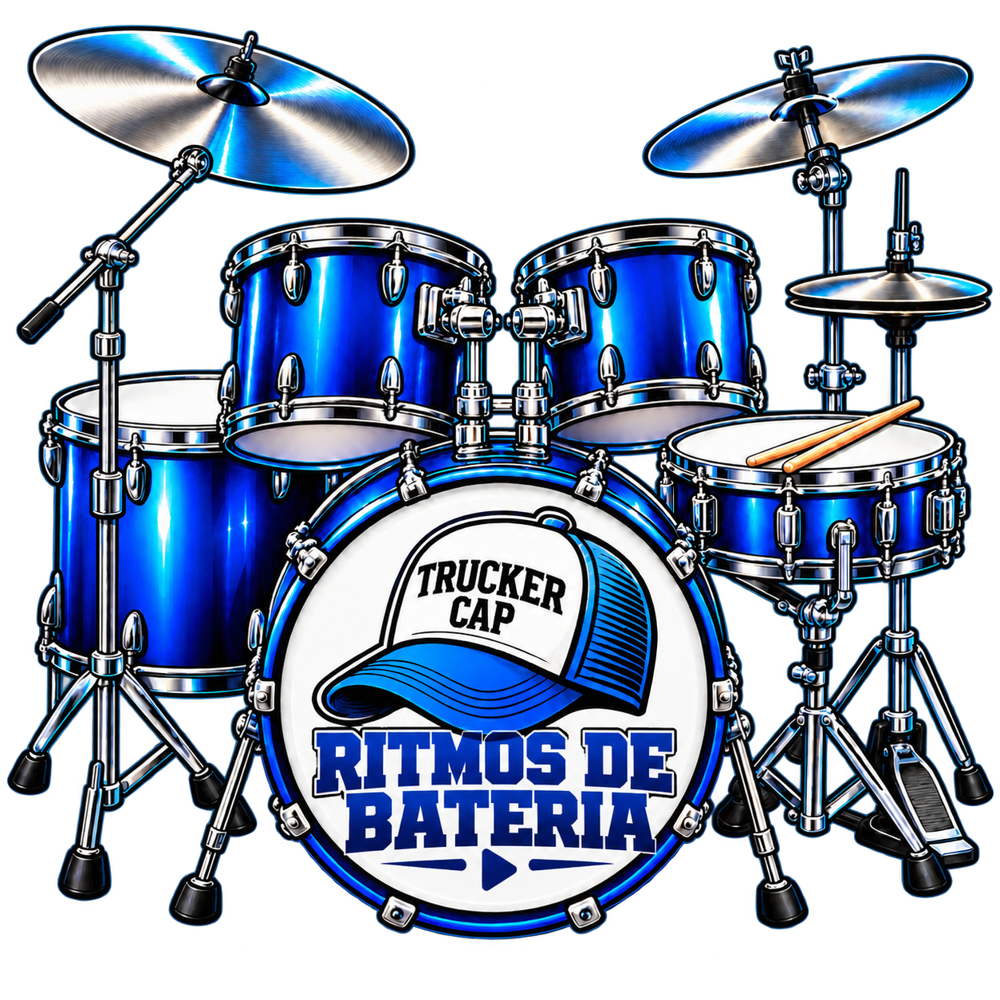

O balanço
é daqui.
Samba · MPB · Forró · Piseiro
Sertanejo · Arrocha · Axé · Vaneira
∿ ∿ ∿
Ritmos de bateria em diversos estilos para violonistas, baixistas, guitarristas, tecladistas, cavaquinistas e outros músicos que querem uma bateria acompanhando seus estudos, ensaios e apresentações.
Quero o app de ritmos de bateria ↗
Uma variedade de estilos brasileiros e internacionais para acompanhar seu instrumento. Escolha sua levada, ajuste o andamento e comece a tocar.
Praticar uma sequência de acordes. Encontrar um solo. Preparar o repertório. Com uma levada acompanhando, cada exercício ganha um contexto musical — e cada ideia encontra espaço para acontecer.
Samba, MPB, forró, sertanejo, rock, blues, pop e muito mais.
Uma variedade de levadas para acompanhar seu repertório.
Samba · MPB · Forró · Piseiro
Sertanejo · Arrocha · Axé · Vaneira
Rock · Hard Rock · Funk Rock
Pop Rock · Skate Punk · Pop
Blues · Reggae · Soul · R&B
Electronic · House/Techno
Tech House · Synthwave
Hip-hop · Trap
Ritmos brasileiros e internacionais, organizados por estilo. Escolha seu groove e comece a tocar.
Controles reunidos para acompanhar
seu jeito de estudar e tocar.
Ajuste o BPM para estudar uma passagem devagar ou ensaiar no andamento do repertório. Processamento de tempo sem simplesmente mudar a afinação da gravação.
Alterações maiores de BPM podem modificar a textura do áudio.Escolha entre A, B, C e D ou ative a alternância dos trechos durante a execução. As diferenças dependem de cada gravação.
Acione pelo botão ou atalho de teclado. Pedais compatíveis que enviam teclas também podem usar o atalho configurado.
Equilibre volume, brilho e reverb. Salve seus ajustes no navegador e retome a prática com facilidade.
Bateria e percussões integram a mesma gravação; os controles atuam sobre o conjunto.Encontre um modelo na família de estilos que você quer praticar.
Defina o BPM de acordo com seu estudo, ensaio ou ideia.
Aperte TOCAR, pegue seu instrumento e entre no groove.
Uma ferramenta prática para preparar repertório, experimentar arranjos e ensaiar.
Seu momento de tocar por prazer, com uma base para acompanhar.
Ritmo, acordes, coordenação e improvisação em atividades com contexto musical.
Samuel de Azevedo é guitarrista, violonista, compositor e professor de música há mais de 20 anos. Estudou com Demma K., Haroldo Garcia, Mozart Mello, Fúlvio Oliveira, Frank Gambale, Jean Marc Belkadi, Sérgio Pereira, José Marques, Endre Solti e Mauro Hector.
É graduado em Licenciatura Musical com Habilitação em Violão e Guitarra pela Unincor e Pós-Graduado em Educação Musical pelo Centro Universitário Claretiano.
Ministra aulas presenciais e online, tendo formado milhares de alunos em seus diversos cursos.
Já trabalhou com diversas bandas e artistas em vários estilos musicais. Em 2016 participou da gravação do 1º DVD da dupla Duani e Dinei ao lado de artistas como Rio Negro & Solimões, Mato Grosso & Mathias, Zé Henrique & Gabriel, Juliano César, Gian & Giovani.
Em 2017 recebeu o 1º Lugar no Concurso Country Guitar BR com a música "Jolly, Pé de Meia", do álbum "Com a Mão na Morsa".
Trabalha como produtor musical no Trucker Cap Studio gravando trilhas, backing tracks e multitracks.
Atualmente atua em projetos como Samuel de Azevedo & Trucker Cap Band, Vinil 21 (Tributo ao Roupa Nova) e Virtual Halen (Tributo ao Van Halen).
Acesse em um navegador moderno no celular, tablet ou computador. Em sistemas compatíveis, adicione à tela inicial e baixe a biblioteca dentro do app para usar sem conexão.
O primeiro acesso e o download precisam de internet. Instalar o ícone e baixar os ritmos são etapas separadas. Recursos e instalação dependem do aparelho e do navegador.Uma biblioteca para acompanhar seu instrumento e dar espaço à sua criatividade.
Não. Você pode usar as levadas em qualquer etapa do aprendizado, ajustando o andamento ao seu momento.
Não. Os Variedade de estilos brasileiros e internacionais já acompanham o app.
Depois do download da biblioteca no próprio app, os ritmos ficam disponíveis offline naquele aparelho. O primeiro acesso e o download precisam de conexão.
O app foi preparado para navegadores modernos em celulares, tablets e computadores. Os recursos e a instalação dependem do sistema e do navegador utilizado.
Não. Você pode usar os botões na tela. Um pedal compatível configurado para enviar teclas pode acionar o atalho da virada.
Não. Os ajustes são salvos localmente no navegador utilizado.